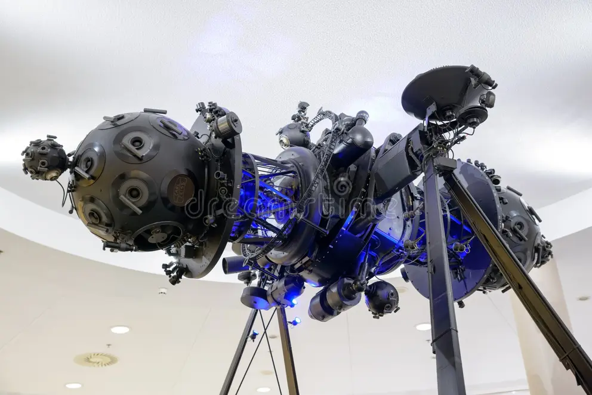

Zeiss Vision Center Chapecó
Tecnologia, precisão e excelência em cuidado com a visão
O Zeiss Vision Center Chapecó é uma referência nacional em tecnologia óptica e cuidado com a visão, sendo reconhecido como o primeiro centro da ZEISS no Brasil. Localizado na Avenida Porto Alegre, em Chapecó, o espaço foi idealizado para oferecer uma experiência premium, aliando inovação tecnológica, precisão e excelência no atendimento. Com o sucesso da unidade pioneira, a marca também expandiu sua presença na cidade com uma segunda unidade na Avenida Getúlio Vargas, reforçando seu compromisso com qualidade e acessibilidade. Integrando tradição e inovação no setor óptico, o Zeiss Vision Center Chapecó se destaca por proporcionar soluções visuais avançadas, consolidando-se como um dos principais representantes da marca no país.
.jpeg)
.jpeg)

.jpeg)
Mas o que é o ZEISS
Fundada em 1846 por Carl Zeiss, na cidade de Jena, Alemanha, a ZEISS nasceu como uma pequena oficina de mecânica de precisão especializada na produção de microscópios. Com o tempo, e especialmente por meio da colaboração com o cientista Ernst Abbe, a empresa revolucionou o campo da óptica, estabelecendo novos padrões de qualidade e inovação.
Atualmente, a ZEISS é reconhecida mundialmente como líder em tecnologia óptica e optoeletrônica, atuando em áreas como saúde, indústria de semicondutores e lentes oftálmicas, sempre com foco em precisão, excelência e avanço tecnológico.


ZEISS e a Exploração Espacial
A excelência da ZEISS também ultrapassou os limites da Terra. Durante a missão Apollo 11, em 1969, que marcou a chegada do homem à Lua, equipamentos ópticos de altíssima precisão foram fundamentais para registrar esse momento histórico. As lentes utilizadas nas câmeras desenvolvidas em parceria com a NASA contavam com tecnologia avançada, alinhada aos rigorosos padrões de qualidade que consagraram a ZEISS mundialmente.

Esse marco reforça o compromisso da empresa com a inovação e a precisão, demonstrando como sua expertise em óptica contribuiu para uma das maiores conquistas da humanidade.